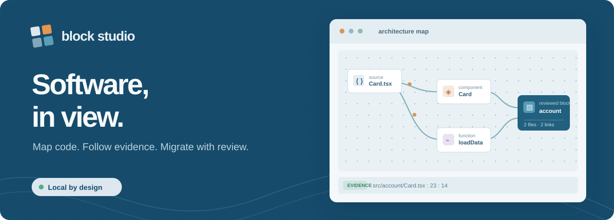

Find the real edges
Explore files, components, hooks, and functions. Follow each observed connection back to a source location.

Block Studio is a local architecture workspace for JavaScript, TypeScript, and React. It scans source into an evidence-linked graph, helps you propose feature boundaries, and checks changes in isolated Git worktrees.
Early development. The graph supports review; it does not replace it.
Explore files, components, hooks, and functions. Follow each observed connection back to a source location.
Declare a block with an explicit file scope, dependencies, rationale, and verification commands.
Run checks in a worktree, inspect the proposal, and record decisions in a resumable roadmap ledger.
Requires Node.js 22 or newer. The browser console runs on your machine and scans the repository path you choose.
Read the full guidegit clone https://github.com/sirnax/block-bot-dev.git
cd block-bot-dev
npm ci
npm start